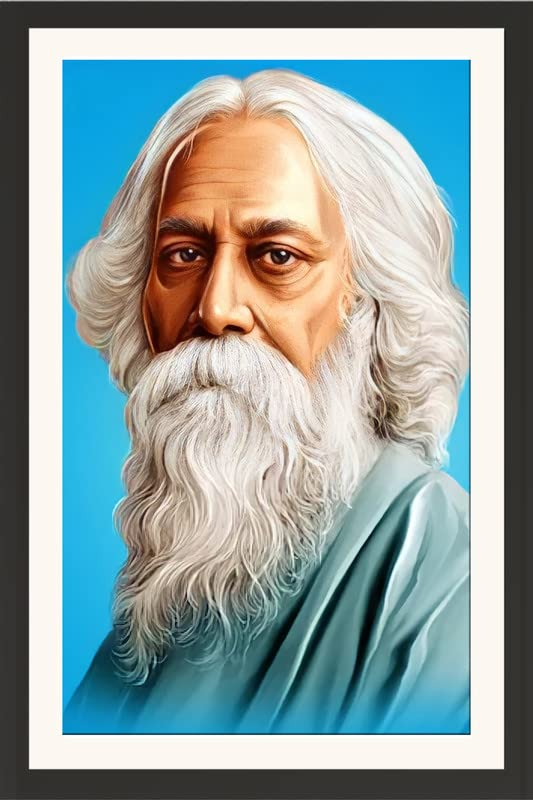

Rabindranath Tagore

Birth Name:
Rabindranath ThakurBorn:
May 7, 1861, Kolkata (then Calcutta), IndiaDied:
August 7, 1941, Jorasanko Thakur Bari, Kolkata, IndiaOccupation:
Poet, philosopher, novelist, playwright, composer, painter, educationistFamous For:
First non-European to win the Nobel Prize in Literature (1913); composer of India's national anthem “Jana Gana Mana”
Early Life and Education
Rabindranath Tagore was born into an influential Bengali family deeply engaged in cultural and intellectual pursuits. From an early age, he was exposed to literature, music, and philosophy. Though he disliked formal schooling, he was privately educated and later traveled to England for further studies, attending University College London.
Tagore was a prodigious writer from childhood, publishing poems and short stories by his teens. His deep cultural roots combined with exposure to Western ideas shaped his unique literary voice.
Literary Contributions
Tagore reshaped Bengali literature and music. His poetry collection “Gitanjali” (Song Offerings) brought him international fame and earned him the Nobel Prize in Literature in 1913. He wrote over 2,000 songs, plays, short stories, novels, and essays — many of which explored humanism, nationalism, and spirituality.
He also composed the national anthems of India (“Jana Gana Mana”) and Bangladesh (“Amar Shonar Bangla”), and inspired Sri Lanka's national anthem as well.
Education and Santiniketan
Tagore was a pioneer in education. He founded Visva-Bharati University in Santiniketan, an institution that integrated Indian traditions with Western educational methods. He believed in open, holistic, and creative learning rather than rigid classroom instruction.
His school became a center for art, music, and cross-cultural learning, attracting students and scholars from around the world.
Philosophy and Ideals
Tagore’s worldview was shaped by universal humanism. He believed in:
- The unity of mankind
- Harmony between nature and humanity
- A balance of tradition and modernity
- Freedom of thought and expression
- A global spiritual and cultural consciousness
He was critical of blind nationalism and instead promoted internationalism and peace.
Legacy
- First Asian Nobel Laureate (1913)
- Composed national anthems of two countries
- Founder of Visva-Bharati University
- Enriched Bengali literature with timeless works
- Influenced thinkers like Gandhi, Nehru, and even Einstein
His influence transcended literature — extending to art, music, politics, and education — and left an indelible mark on Indian and global culture.
Death
Rabindranath Tagore passed away on August 7, 1941, in his ancestral home. He was 80. His vision, voice, and values continue to shape generations through his vast body of work.
Quotes by Rabindranath Tagore:
- “You can’t cross the sea merely by standing and staring at the water.”
- “Let your life lightly dance on the edges of Time like dew on the tip of a leaf.”
- “Where the mind is without fear and the head is held high…”
- “Faith is the bird that feels the light and sings when the dawn is still dark.”